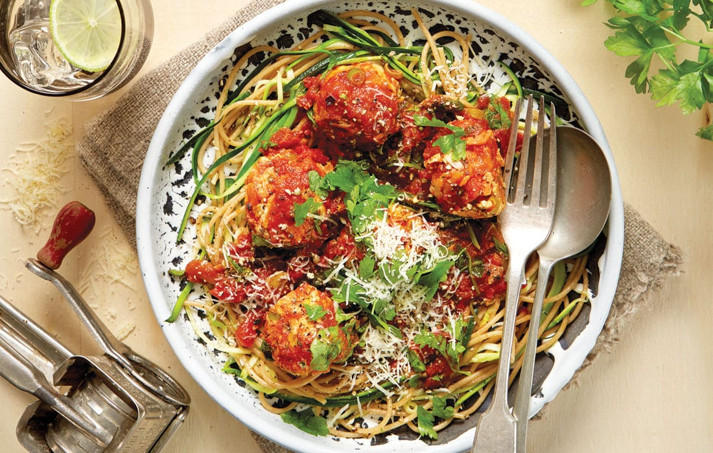

Makarona me qofte dhe borzilok

Pershkrimi
Eshte nje recete tradicionale shume e shijshme e cila ja vlen te pergatitet. Ju befte mire
Perberesit
- 350 gr makarona të gjata
- Djathë kaçkavall i grirë
- 500 gr mish i grirë viçi
- 1/2 qepë, e grirë hollë
- 2 feta buke të lagura në qumësht, vetëm tulin
- 1 vezë
- 1 lugë kafe hudhër pluhur
- Kripë dhe piper i zi
Pergatitja
- Përgatisim brumin e qofteve duke bashkuar në një tas mishin e grirë me qepën, vezën, tulin e bukës të shtrydhur fort nga qumështi, hudhrën, kripën dhe piperin
- E lemë masën të pushojë për minimumi gjysmë ore në frigorifer mbuluar me leter celofoni.
- Pastaj me duar të lagura marrim pak nga brumi i qofteve dhe i japim formë të rrumbullakët me madhësi sa një kokërr arre.
- I skuqim në zjarr mesatar në pak vaj ulliri derisa të marrin ngjyrë të artë nga të gjitha anët dhe i lemë mënjanë.
- Përgatisim salcën e makaronave duke kavardisur në vaj ulliri qepën e grirë derisa të zbutet, shtojmë salcën e domateve, borzilokun dhe hedhim brenda qoftet me kujdes.
- Në pjatë, hedhim makaronat dhe sipër salcën me domate dhe qofte të vogla.
- I spërkasim me pak djathë kaçkavall të grirë dhe i zbukurojmë me gjethe borziloku.